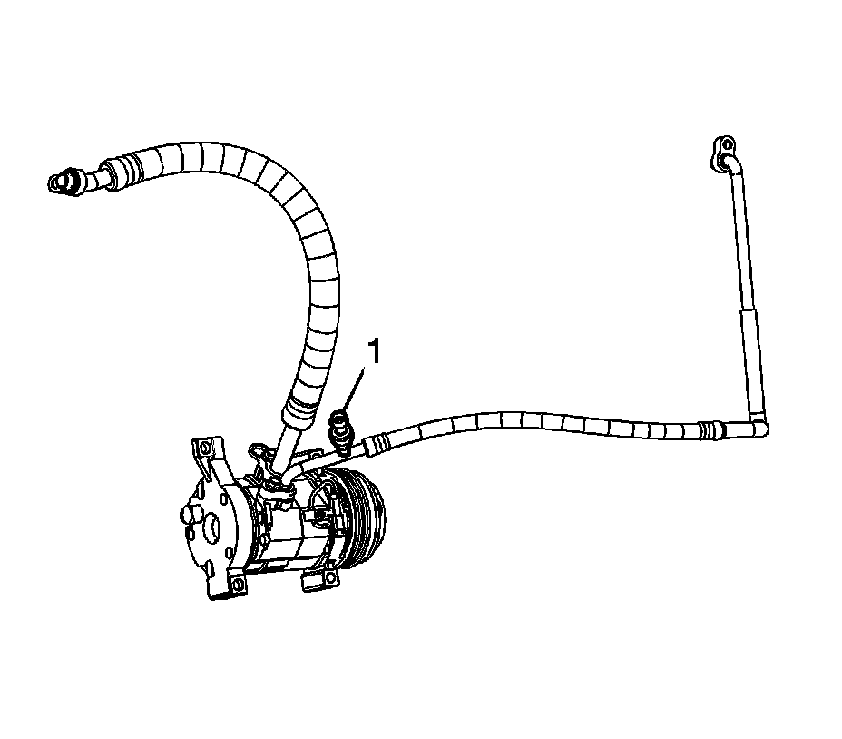

Refrigerant Pressure Sensor / Switch: Service and Repair
AIR CONDITIONING (A/C) REFRIGERANT PRESSURE SENSOR REPLACEMENT
TOOLS REQUIRED
J 39400-A Halogen Leak Detector
REMOVAL PROCEDURE

1. Disconnect the electrical connector from the A/C high pressure recirculation switch.
2. Remove the A/C high pressure recirculation switch (1) from the condenser tube.
INSTALLATION PROCEDURE
1. NOTE: Refer to Fastener Notice.
Install the A/C high pressure recirculation switch.
Tighten the switch to 6 N.m (53 lb in).
2. Connect the electrical connector to the A/C high pressure recirculation switch.
3. Leak test the fittings of the components using the J 39400-A.
4. Lower the vehicle.